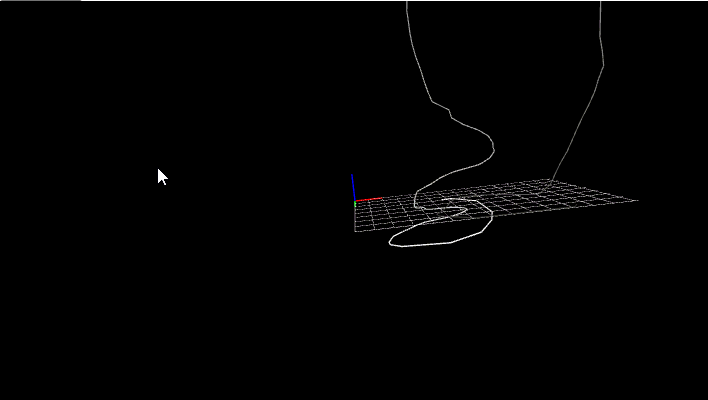

This tutorial combines Adafruit's documentation on WebUSB with a p5 demo for plotting points in 3D space. This WebUSB method is particularly useful because it allows your browser to directly ask permission to access your microcontroller over USB, meaning you don't need to go through the step of establishing a connection bridge yourself.
For this tutorial, you'll need the following:
Similar to the Adafruit tutorial, we'll want to install the Adafruit_TinyUSB library and make sure to go to Tools -> USB Stack and select TinyUSB. Copy and upload the following code.
#include "Adafruit_TinyUSB.h"
// USB WebUSB object
Adafruit_USBD_WebUSB usb_web;
// Landing Page: scheme (0: http, 1: https), url
WEBUSB_URL_DEF(landingPage, 1 /*https*/, "https://nathanmelenbrink.github.io/ps70/13_programming/p5-webusb/index.html");
void setup(){
usb_web.setLandingPage(&landingPage);
usb_web.begin();
Serial.begin(115200);
// wait until device mounted
while ( !USBDevice.mounted() ) delay(1);
Serial.println("p5 WebUSB Serial example");
}
void loop(){
int reading = analogRead(A2);
usb_web.println(reading);
delay(100);
}
The javascript side is a little more complicated. We'll want to make a folder that contains an index.html file, a serial.js file, and a sketch.js file. Use the browser Inspect tool to see the contents of the demo file.
The index.html file should look something like this:
<!doctype html>
<html class="no-js" lang="en">
<head>
<meta charset="UTF-8">
<script language="javascript" type="text/javascript" src="https://cdnjs.cloudflare.com/ajax/libs/p5.js/1.0.0/lib/p5.js"> </script>
<script language="javascript" type="text/javascript" src="serial.js"> </script>
<script language="javascript" type="text/javascript" src="sketch.js"> </script>
</head>
<body>
<button id="connect">Connect</button>
</body>
</html>
Finally, you'll need a sketch.js file, which can look something like this. Make sure to change your port name.